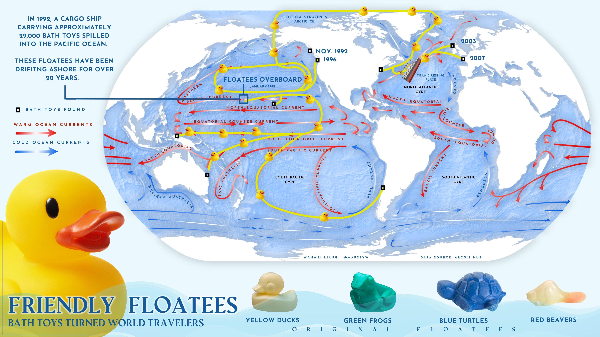

Lecture 1 – Introduction and Transport Processes
Biological Carbon Pump
- Process where \( \mathrm{CO_2} \) from the atmosphere is absorbed by surface ocean phytoplankton through photosynthesis and transferred to deeper ocean layers via sinking organic particles
- The Biological Carbon Pump leads to an increase of \( \mathrm{DIC} \) in the ocean’s interior over the concentration that would result from only the solubility pump
- It regulates atmospheric \( \mathrm{CO_2} \) levels and influences Earth’s climate over geological timescales
The Solubility Pump
- Physical process of solving \(\mathrm{CO_2}\) in ocean water
- \(\mathrm{CO_2}\) and water react to form \(\mathrm{H_2CO_3}\) (carbonic acid)
- Since \(\mathrm{H_2CO_3}\) is a weak acid and has two \(\mathrm{H^+}\), it can act as a buffer
- 90% of dissolved inorganic carbon (DIC) is bicarbonate \(\mathrm{HCO_3^-}\)
Turbulence
The Tracer Equation
\(T_t = - \mathbf{u} \cdot \nabla T + k \cdot \nabla^2 T + S(\text{source})\)
Tracer-Equation after Reynolds averaging: \(T_t = - \mathbf{u} \cdot \nabla T + k_{turb} \cdot \nabla^2 T + S(\text{source})\)\(k_{turb}\) = turbulent diffusivity (depends on size and strength of waves or eddies)

import numpy as np
import matplotlib.pyplot as plt
from tqdm import tqdm
import imageio.v3 as iio
import os
# Parameters
nx, ny = 50, 50
dx, dy = 1.0, 1.0
dt = 0.01
k = 0.1
nt = 500
u = 1.0
d = 0.5
# Grid
x = np.linspace(0, (nx-1)*dx, nx)
y = np.linspace(0, (ny-1)*dy, ny)
X, Y = np.meshgrid(x, y, indexing='ij')
# Initial tracer field
T_initial = np.exp(-((X-25)**2 + (Y-25)**2)/50)
S = np.zeros((nx, ny))
S[20:30, 20:30] = 0.1
# Laplacian
def laplacian(T, dx, dy):
return (
(np.roll(T, -1, axis=0) - 2*T + np.roll(T, 1, axis=0)) / dx**2 +
(np.roll(T, -1, axis=1) - 2*T + np.roll(T, 1, axis=1)) / dy**2
)
# Boundary conditions
def apply_boundary_conditions(T):
T[0, :] = T[1, :]
T[-1, :] = T[-2, :]
T[:, 0] = T[:, 1]
T[:, -1] = T[:, -2]
return T
# Precompute frames
T_advect_list, T_diffuse_list, T_source_list, T_full_list = [], [], [], []
T_advect = T_initial.copy()
T_diffuse = T_initial.copy()
T_source = T_initial.copy()
T_full = T_initial.copy()
for n in tqdm(range(nt), desc="Precomputing frames"):
# Advection
dTdx = (np.roll(T_advect, -1, axis=0) - np.roll(T_advect, 1, axis=0)) / (2*dx)
dTdy = (np.roll(T_advect, -1, axis=1) - np.roll(T_advect, 1, axis=1)) / (2*dy)
advect = -(u * dTdx + d * dTdy)
T_advect += dt * advect
T_advect = apply_boundary_conditions(T_advect)
T_advect_list.append(T_advect.copy())
# Diffusion
diffuse = k * laplacian(T_diffuse, dx, dy)
T_diffuse += dt * diffuse
T_diffuse = apply_boundary_conditions(T_diffuse)
T_diffuse_list.append(T_diffuse.copy())
# Source
T_source += dt * S
T_source = apply_boundary_conditions(T_source)
T_source_list.append(T_source.copy())
# Full
dTdx_full = (np.roll(T_full, -1, axis=0) - np.roll(T_full, 1, axis=0)) / (2*dx)
dTdy_full = (np.roll(T_full, -1, axis=1) - np.roll(T_full, 1, axis=1)) / (2*dy)
advect_full = -(u * dTdx_full + d * dTdy_full)
diffuse_full = k * laplacian(T_full, dx, dy)
T_full += dt * (advect_full + diffuse_full + S)
T_full = apply_boundary_conditions(T_full)
T_full_list.append(T_full.copy())
# Save frames as images
if not os.path.exists('frames'):
os.makedirs('frames')
fig, axes = plt.subplots(2, 2, figsize=(14, 10), facecolor='none')
titles = ['Advection Only', 'Diffusion Only', 'Source Only', 'Full Model']
pcm_list = []
for ax, title in zip(axes.flat, titles):
pcm = ax.pcolormesh(X, Y, np.zeros_like(T_initial), shading='nearest', cmap='coolwarm', vmin=0, vmax=1)
ax.set_title(title, color='#d6ebff')
ax.set_xlabel('x', color='#d6ebff')
ax.set_ylabel('y', color='#d6ebff')
ax.set_facecolor('none')
ax.tick_params(colors='#d6ebff')
for spine in ax.spines.values():
spine.set_edgecolor('#d6ebff')
pcm_list.append(pcm)
fig.patch.set_alpha(0.0)
# Add colorbar
cbar_ax = fig.add_axes([0.92, 0.15, 0.02, 0.7])
cbar = fig.colorbar(pcm_list[-1], cax=cbar_ax)
cbar.set_label('Tracer Concentration', color='#d6ebff')
cbar.ax.yaxis.set_tick_params(color='#d6ebff')
plt.setp(plt.getp(cbar.ax.axes, 'yticklabels'), color='#d6ebff')
filenames = []
for i in tqdm(range(nt), desc='Saving frames'):
fields = [T_advect_list[i], T_diffuse_list[i], T_source_list[i], T_full_list[i]]
for pcm, T in zip(pcm_list, fields):
pcm.set_array(T.ravel())
fname = f'frames/frame_{i:04d}.png'
plt.savefig(fname, dpi=100, transparent=True)
filenames.append(fname)
plt.close()
# Create GIF from saved frames
print('Creating GIF...')
frames = [iio.imread(fname) for fname in filenames]
iio.imwrite('Lecture1_TracerFieldEvolution.gif', frames, duration=1/30, loop=0) # 30 fps, infinite replay
# Clean up
for fname in filenames:
os.remove(fname)
os.rmdir('frames')
print("Saved as transparent tracer_evolution.gif!")Dissolved Inorganic carbonate
The total concentration of carbon in dissolved inorganic form in seawater, referred to as dissolved inorganic carbon (DIC), is defined as the sum of the concentrations of the three carbonate species: $$ \text{DIC} = [\mathrm{CO}_2^*] + [\mathrm{HCO}_3^-] + [\mathrm{CO}_3^{2-}] $$ Surface observations reveal comparable values of DIC, varying from less than 2000 $\mu\text{mol kg}^{-1}$ in the tropics to more than 2100 $\mu\text{mol kg}^{-1}$ in the high latitudes. Most of the surface DIC is accounted for by $[\text{HCO}_3^-]$, followed by $[\text{CO}_3^{2-}]$, while $[\text{CO}_2^*]$ accounts for less than 1%. The patterns of DIC and its carbon components are not identical over the globe: there is a general increase in DIC, $[\text{HCO}_3^-]$ and $[\text{CO}_2^*]$ with latitude, but an opposing decrease in $[\text{CO}_3^{2-}]$.Autocorrelation
Many climate data contain autocorrelation, we often can’t avoid it.
Autocovariance Function (ACF)The autocovariance function \(\gamma(\tau)\) is the covariance of a time series with itself
at another time by a time lag (or lead) \(\tau\). For a time series \(x(t)\)
with \(t_1\) and \(t_N\) as the starting and end points of the time series, \(x'(t)\) means remove the mean → it's the anomaly at time \(t\), the ACF is defined as:
\[
\gamma(\tau) = \frac{1}{(t_N - \tau) - t_1} \sum_{t = t_1}^{t_N - \tau} x'(t) \cdot x'(t + \tau)
\]
At lag \(\tau = 1\), assuming \(t_1 = 0\), \(t_N = N\):
\[
\gamma(1) = \frac{1}{N - 1} \left( x'(0) \cdot x'(1) + x'(1) \cdot x'(2) + x'(2) \cdot x'(3) + \dots + x'(N - 1) \cdot x'(N) \right)
\]
At lag \(\tau = 2\):
\[
\gamma(2) = \frac{1}{N - 2} \left( x'(0) \cdot x'(2) + x'(1) \cdot x'(3) + x'(2) \cdot x'(4) + \dots + x'(N - 2) \cdot x'(N) \right)
\]
At lag \(\tau = N - 1\):
\[
\gamma(N - 1) = x'(0) \cdot x'(N - 1) + x'(1) \cdot x'(N)
\]
At lag \(\tau = 0\):
\[
\gamma(0) = \overline{x'^2} = \text{variance}
\]
[Pf] Using Mathematical Induction,
Base Case \(\tau = 0\): \(\gamma(0) = \frac{1}{N} \sum_{t=0}^{N - 1} x'(t) \cdot x'(t) = \frac{1}{N} \sum_{t=0}^{N - 1} (x'(t))^2\)
Assume the formula holds for arbitrary \(k\), where \(0 \leq k < N - 1\):
\(
\gamma(k) = \frac{1}{N - k} \sum_{t=0}^{N - k - 1} x'(t) \cdot x'(t + k)
\)
\(\Rightarrow \gamma(k + 1) = \frac{1}{N - (k + 1)} \sum_{t = 0}^{N - (k + 1) - 1} x'(t) \cdot x'(t + k + 1)
= \frac{1}{N - k - 1} \sum_{t = 0}^{N - k - 2} x'(t) \cdot x'(t + k + 1)\)
\(\Rightarrow \gamma(\tau) = \frac{1}{N - \tau} \sum_{t=0}^{N - \tau - 1} x'(t) \cdot x'(t + \tau)
\quad \forall\ \tau \in [0, N - 1]\)
\(\because\) The total length is \(t_N - t_1 + 1\), \( t + \tau \leq t_N \Rightarrow t \leq t_N - \tau\)
\(\therefore \boxed{\gamma(\tau) = \frac{1}{(t_N - \tau) - t_1} \sum_{t = t_1}^{t_N - \tau} x'(t) \cdot x'(t + \tau)}\)
def autocovariance(x, lag):
x = np.asarray(x)
x_mean = np.mean(x)
N = len(x)
return np.sum((x[:N-lag] - x_mean) * (x[lag:] - x_mean)) / (N - lag)np.correlate() function that computes the cross-correlation of two 1-dimensional sequences.
It should be noticed that the definition of correlation above is not unique and sometimes correlation may be defined differently,
the np.correlate() function uses \(c(\tau) = \sum_{t = t_1}^{t_N - \tau} x(t + \tau) \cdot \bar{y}(t)
\) to compute the autocovariance and does not include the
\(
\frac{1}{(t_N - \tau) - t_1}
\) factor, so we have to make some adjustments to convert to autocorrelation.
Bonus: Rubber Ducks Used as Tracers
 We can model the ducks as ‘tracer particles’ in the ocean. The term ‘tracer particles’ refers to small objects that move with a fluid without really changing how it behaves. They are very common: examples include leaves on the surface of a river and, fortunately, rubber ducks in the ocean. We can do simulations that try to track the amount of these particles in different parts of the ocean.Reference: Ocean spills
Any floating object can serve as a makeshift drift meter, as long as it is known where the object entered the ocean and where it was retrieved. The path of the object can then be inferred, providing information about the movement of surface currents. If the time of release and retrieval are known, the speed of currents can also be determined. Oceanographers have long used drift bottles (a floating “message in a bottle” or a radio-transmitting device set adrift in the ocean) to track the movement of currents. Many objects have inadvertently become drift meters when ships lose cargo at sea. In January 1992, a shipping mishap turned into an unexpected scientific breakthrough when the cargo ship Ever Laurel lost a container carrying 29,000 plastic toys—mostly rubber ducks—into the Pacific Ocean.
Autocorrelation
The autocorrelation \(\rho(\tau)\) is defined as the normalized autocovariance:\[ \rho(\tau) = \frac{\gamma(\tau)}{\gamma(0)} \]This gives the autocovariance at lag \(\tau\) divided by the variance of the time series, yielding a value between \(-1\) and \(1\).
def autocorrelation(x, lag):
x = np.asarray(x)
x_mean = np.mean(x)
x_var = np.var(x)
N = len(x)
return np.sum((x[:N-lag] - x_mean) * (x[lag:] - x_mean)) / ((N - lag) * x_var)The Durbin-Watson test statistic assesses the autocorrelation of residuals in a regression, it is defined as: \[ DW = \frac{\sum_{t=2}^{T} (e_t - e_{t-1})^2}{\sum_{t=1}^{T} e_t^2} \]The null hypothesis of the test is that there is no serial correlation in the residuals.The test statistic is approximately equal to \( 2 \cdot (1 - r) \), where \( r \) is the sample autocorrelation of the residuals. For \( r = 0 \), there is no serial correlation, the test statistic equals 2. This statistic will always be between 0 and 4
- The closer to 0, the more evidence for positive serial correlation (residuals persist)
- The closer to 4, the more evidence for negative serial correlation (residuals alternate)
 Anomaly Calculation
Anomaly Calculation
An anomaly is the difference between an actual value and some long-term average value. Anomalies can be computed by removing the mean \[ x' = x - \bar{x} \] This isolates deviations from the mean and highlights variability around a baseline.
x = series - np.mean(series)Example: Autocorrelation in El Niño-Southern Oscillation (ENSO) Data
ENSO (El Niño-Southern Oscillation) is a periodic fluctuation (every 2–7 years) in wind and sea surface temperature over the tropical eastern Pacific Ocean. It affects the global climate and is a major driver of Earth's interannual climate variability, causing various climate anomalies. Using the ENSO-related standardized monthly climate data (1950–2024) available on Kaggle, some examples of autocorrelation can be illustrated.
Take a quick look at the actual structure of ENSO.csv first
import pandas as pd
df = pd.read_csv('ENSO.csv', header=None)
# Show shape and first few rows
print("Shape of the file:", df.shape)
print(df.head())
Shape of the file: (883, 22)
0 1 2 3 4 \
0 Date Year Month Global Temperature Anomalies Nino 1+2 SST
1 1/1/1950 1950 JAN -0.2 NaN
2 2/1/1950 1950 FEB -0.26 NaN
3 3/1/1950 1950 MAR -0.08 NaN
4 4/1/1950 1950 APR -0.16 NaN
5 6 7 8 \
0 Nino 1+2 SST Anomalies Nino 3 SST Nino 3 SST Anomalies Nino 3.4 SST
1 NaN NaN NaN NaN
2 NaN NaN NaN NaN
3 NaN NaN NaN NaN
4 NaN NaN NaN NaN
9 ... 12 13 14 15 16 \
0 Nino 3.4 SST Anomalies ... TNI PNA OLR SOI Season (2-Month)
1 NaN ... 0.624 -3.65 NaN NaN DJ
2 NaN ... 0.445 -1.69 NaN NaN JF
3 NaN ... 0.382 -0.06 NaN NaN FM
4 NaN ... 0.311 -0.23 NaN NaN MA
17 18 19 20 21
0 MEI.v2 Season (3-Month) ONI Season (12-Month) ENSO Phase-Intensity
1 NaN DJF -1.5 1950-1951 ML
2 NaN JFM -1.3 1950-1951 ML
3 NaN FMA -1.2 1950-1951 ML
4 NaN MAM -1.2 1950-1951 ML
[5 rows x 22 columns]
The primary indicators for ENSO are ONI (Oceanic Niño Index) and MEI.v2. ONI is the 3-month average SST anomaly in the Nino 3.4 region, it is the preferred indicator by NOAA. To be considered an El Niño/La Niña event, the SST anomalies in the Nino 3.4 region must meet the following criteria and remain at or above/below these levels for a minimum of five consecutive months
- El Niño → anomalies at or above +0.5°C
- La Niña → anomalies at or below -0.5°C
- Neutral → anomalies between -0.5°C and +0.5°C
The threshold is further divided into:
- Weak → 0.5°C to 0.9°C SST anomaly
- Moderate → 1.0°C to 1.4°C
- Strong → 1.5°C to 1.9°C
- Very Strong → ≥ 2.0°C
import pandas as pd
import matplotlib.pyplot as plt
import matplotlib
import matplotlib.dates as mdates
import numpy as np
from matplotlib.colors import Normalize
from matplotlib.cm import get_cmap, ScalarMappable
# Load CSV with no header, and use row 0 as column names
df = pd.read_csv('ENSO.csv', header=0)
# Convert 'Date' column (column 0) to datetime
df['Date'] = pd.to_datetime(df['Date'], errors='coerce')
df = df.dropna(subset=['Date']) # Drop rows where date couldn't be parsed
df.set_index('Date', inplace=True)
# Convert ONI column to numeric
df['ONI'] = pd.to_numeric(df['ONI'], errors='coerce')
df = df.dropna(subset=['ONI'])
# Extract time and ONI
dates = df.index
oni = df['ONI'].values
# Create colormap and normalization
cmap = get_cmap('coolwarm')
norm = Normalize(vmin=oni.min(), vmax=oni.max()) # Based on ONI value range, or other ways
# Plot setup
fig, ax = plt.subplots(figsize=(15, 5), dpi=300)
fig.patch.set_alpha(0.0)
ax.set_facecolor('none')
# Plot ONI with gradient line
for i in range(len(oni) - 1):
ax.plot(dates[i:i+2], oni[i:i+2],
color=cmap(norm(oni[i])), linewidth=2)
# Add color bar
sm = ScalarMappable(norm=norm, cmap=cmap)
sm.set_array([])
cbar = fig.colorbar(sm, ax=ax, pad=0.02)
cbar.set_label('ONI Value', color='#d6ebff')
cbar.ax.yaxis.set_tick_params(color='#d6ebff')
plt.setp(plt.getp(cbar.ax.axes, 'yticklabels'), color='#d6ebff')
# Horizontal ENSO thresholds
x = matplotlib.dates.date2num(dates)
levels = [
(2.0, 'very strong', 'red'),
(1.5, 'strong', 'red'),
(1.0, 'moderate', 'red'),
(0.5, 'weak', 'red'),
(-0.5, 'weak', 'blue'),
(-1.0, 'moderate', 'blue'),
(-1.5, 'strong', 'blue'),
]
for level, label, color in levels:
ax.axhline(y=level, color=color, linestyle=':', linewidth=1)
ax.text(x[-1], level, f' {label}', color=color, va='center')
# Custom legend
line_red = matplotlib.lines.Line2D([0], [0], label='El Niño (ONI > 0.5)', color='red')
line_blue = matplotlib.lines.Line2D([0], [0], label='La Niña (ONI < -0.5)', color='blue')
legend = ax.legend(handles=[line_red, line_blue])
# Style legend text
for text in legend.get_texts():
text.set_color('#d6ebff')
# Axes labels and title
ax.set_xlabel("Years", color="#d6ebff")
ax.set_ylabel("ONI", color="#d6ebff")
ax.set_title("ENSO and ONI Relation", fontsize=14, color="#d6ebff")
# Axis ticks and spines
ax.tick_params(colors="#d6ebff")
for label in ax.get_xticklabels():
label.set_color('#d6ebff')
for label in ax.get_yticklabels():
label.set_color('#d6ebff')
for spine in ax.spines.values():
spine.set_color("#d6ebff")
# Grid
ax.grid(True, linestyle='--', linewidth=0.5, color='#3c5c78', alpha=0.5)
plt.tight_layout()
plt.show()Loop through all numeric variables in ENSO.csv, apply seasonal averaging and detrend each with a linear fit, compute the residual autocorrelation, and rank the variables by their Durbin-Watson statistic.
import numpy as np
import pandas as pd
from statsmodels.stats.stattools import durbin_watson
from scipy import stats
# Load dataset
df = pd.read_csv('ENSO.csv')
# Filter numeric variables only
numeric_cols = df.select_dtypes(include='number').columns
results = []
for var in numeric_cols:
series = df[var].dropna().values
if len(series) < 120: # skip very short or incomplete variables
continue
series = series[:(len(series) // 3) * 3] # trim to full seasons
seasonal = np.mean(series.reshape(-1, 3), axis=1)
time = np.arange(len(seasonal))
# Trend and residuals
trend = np.polyval(np.polyfit(time, seasonal, 1), time)
residuals = seasonal - trend
# Durbin-Watson test on residuals
dw = durbin_watson(residuals)
results.append((var, dw))
# Sort by closeness to DW = 2 (least autocorrelated)
results_sorted_by_distance = sorted(results, key=lambda x: abs(x[1] - 2))
# Sort by actual DW value (to show most autocorrelated: smallest DWs)
results_sorted_by_value = sorted(results, key=lambda x: x[1])
# Show least autocorrelated
print("\nTop 5 least autocorrelated (residuals):")
for name, dw in results_sorted_by_distance[:5]:
print(f"{name:30s} DW: {dw:.3f}")
# Show most autocorrelated
print("\nTop 5 most autocorrelated (residuals):")
for name, dw in results_sorted_by_distance[-5:][::-1]:
print(f"{name:30s} DW: {dw:.3f}")
Top 5 least autocorrelated (residuals):
PNA DW: 1.678
Nino 1+2 SST DW: 1.668
Year DW: 2.386
Nino 3 SST DW: 1.209
Nino 3.4 SST DW: 0.813
Top 5 most autocorrelated (residuals):
Nino 4 SST Anomalies DW: 0.349
TNI DW: 0.354
ONI DW: 0.369
MEI.v2 DW: 0.405
Nino 3.4 SST Anomalies DW: 0.425
import numpy as np
import pandas as pd
import matplotlib.pyplot as plt
from scipy import stats
from statsmodels.stats.stattools import durbin_watson
# --- Load dataset and scan numeric variables ---
df = pd.read_csv('ENSO.csv')
numeric_cols = df.select_dtypes(include='number').columns
dw_results = []
# --- Compute DW statistics for all variables ---
for var in numeric_cols:
series = df[var].dropna().values
if len(series) < 120:
continue
series = series[:(len(series) // 3) * 3]
seasonal = np.mean(series.reshape(-1, 3), axis=1)
time = np.arange(len(seasonal))
trend = np.polyval(np.polyfit(time, seasonal, 1), time)
residuals = seasonal - trend
dw = durbin_watson(residuals)
dw_results.append((var, seasonal, time, trend, residuals, dw))
# --- Sort by DW distance from 2 ---
sorted_by_dw = sorted(dw_results, key=lambda x: abs(x[5] - 2))
least_autocorr = sorted_by_dw[:3]
most_autocorr = sorted_by_dw[-3:]
# --- Plotting grid for each group ---
def plot_var(axs, row, label, seasonal, time, trend, residuals):
lags = np.arange(len(seasonal)) - len(seasonal) // 2
# 1. Time Series
axs[row, 0].plot(time, seasonal, '#6d9a26', linewidth=2, label=label)
axs[row, 0].plot(time, trend, '#ffe1ec', linewidth=1.5)
axs[row, 0].set_title(f"{label} Time Series")
axs[row, 0].set_ylabel("Value")
axs[row, 0].grid(True)
# 2. Full Autocorrelation
corr = np.correlate(
seasonal - seasonal.mean(),
(seasonal - seasonal.mean()) / (len(seasonal) * np.var(seasonal)),
mode='same'
)
axs[row, 1].plot(lags, corr, '#6d9a26', linewidth=2)
axs[row, 1].set_title("Full Autocorr")
axs[row, 1].set_xlim(-80, 80)
axs[row, 1].set_ylim(-0.4, 1)
axs[row, 1].grid(True)
# 3. Residual Autocorrelation (Zoomed Positive)
resid_corr = np.correlate(
residuals / np.std(residuals),
residuals / (np.std(residuals) * len(residuals)),
mode='same'
)
half = len(seasonal) // 2
axs[row, 2].plot(lags[half:], corr[half:], '#6d9a26', linewidth=2, label='Original')
axs[row, 2].plot(lags[half:], resid_corr[half:], '#ffe1ec', linewidth=2, label='Residuals')
axs[row, 2].set_title("Residual Autocorr")
axs[row, 2].set_xlim(0, 80)
axs[row, 2].set_ylim(-0.4, 1)
axs[row, 2].grid(True)
axs[row, 2].legend()
# --- Plot all in a 3x3 grid for least and most autocorrelated variables ---
fig, axs = plt.subplots(6, 3, figsize=(18, 20))
fig.suptitle("Comparison of Least and Most Autocorrelated Variables", fontsize=16)
for i, (name, seasonal, time, trend, resids, dw) in enumerate(least_autocorr):
plot_var(axs, i, f"{name} (DW={dw:.2f})", seasonal, time, trend, resids)
for i, (name, seasonal, time, trend, resids, dw) in enumerate(most_autocorr):
plot_var(axs, i + 3, f"{name} (DW={dw:.2f})", seasonal, time, trend, resids)
# Axis labels
for ax in axs[:, 0]:
ax.set_xlabel("Time (Season Index)")
for ax in axs[:, 1]:
ax.set_xlabel("Lag")
for ax in axs[:, 2]:
ax.set_xlabel("Lag")
plt.tight_layout(rect=[0, 0, 1, 0.96])
plt.show()Noise
Red Noise ModelA red noise time series is defined as an autoregressive process where each value depends on the previous value and a white noise term:
\[x(t) = a \cdot x(t - \Delta t) + b \cdot \epsilon(t)\]
x[t] = a * x[t - dt] + b * epsilon[t]Measure the linear correlation between adjacent time steps, indicating memory in the signal. Multiply both sides of the red noise equation by \(x(t - \Delta t)\) and take the time average to get:
\[\rho(\Delta t) = a\]
rho_lag1 = anp.corrcoef that computes the Pearson correlation coefficient matrix between one or more datasets:
rho_lag1 = np.corrcoef(x[:-1], x[1:])[0, 1]\(
x(t) = a \cdot x(t - \Delta t) + b \cdot \epsilon(t)
\)
\(\Rightarrow
x(t + \Delta t) = a \cdot x(t) + b \cdot \epsilon(t + \Delta t)
\) ,
\(
x(t + 2\Delta t) = a \cdot x(t - \Delta t) + b \cdot \epsilon(t + 2\Delta t)
\)
\(\Rightarrow
\overline{x(t) \cdot x(t + 2\Delta t)} = \overline{a \cdot x(t) \cdot x(t - \Delta t)} + \overline{b \cdot x(t) \cdot \epsilon(t + 2\Delta t)}
\)
Drop the last term uncorrelated noise \(\Rightarrow\) \(\rho(2\Delta t) = a \cdot \rho(\Delta t)\)
Substitute \(a = \rho(\Delta t)\) \(\Rightarrow\) \(\boxed{\rho(2\Delta t) = \rho(\Delta t)^2}\)
The lag-2 autocorrelation of a red-noise time series is equal to the lag-1 autocorrelation squared.
For any integer lag \(n\), the red noise autocorrelation follows:
\[\rho(n\Delta t) = \rho(\Delta t)^n\]
rho_n = rho_1 ** n[Pf] Using Mathematical Induction,
Base Case (n = 1): \(\rho(\Delta t) = \rho(\Delta t)^1\)
Assume for some integer \(k \geq 1\), the autocorrelation at lag \(k\Delta t\) satisfies\(\rho(k\Delta t) = \rho(\Delta t)^k\)
For \(k+1\): \(\rho((k+1)\Delta t) = a \cdot \rho(k\Delta t)\)
\(\Rightarrow \rho((k+1)\Delta t) = \rho(\Delta t) \cdot \rho(\Delta t)^k = \rho(\Delta t)^{k+1}\)
\(\therefore\) For all integers \(n \geq 1\),
\(
\boxed{\rho(n\Delta t) = \rho(\Delta t)^n}
\)
The e-folding time scale \(T_e\) shows how long it takes for autocorrelation to decay to \(1/e \approx 0.368\) of the original value \(\rho(0) = 1\):
\[T_e = -\frac{\Delta t}{\ln(a)}\]
Te = -dt / np.log(a)Red noise autocorrelation also decays exponentially with lag time:
\[\rho(n\Delta t) = e^{-n\Delta t / T_e}\]
rho_n = np.exp(-n * dt / Te)A white noise process is a special case of red noise process \(x(t) = a \cdot x(t - \Delta t) + b \cdot \epsilon(t)\) with the autocorrelation disappears:
\[\rho(\Delta t > 0) = 0 \text{ or simply } a = 0\]
This means that white noise has zero autocorrelation, implying no memory of previous values. In geophysical contexts, white noise is commonly assumed to follow a normal distribution.
x[t] = b * epsilon[t] # when a = 0Example: Noise in El Niño-Southern Oscillation (ENSO) Data
import numpy as np
import pandas as pd
import matplotlib.pyplot as plt
from scipy.stats import linregress
# Load data
df = pd.read_csv('ENSO.csv')
numeric_cols = df.select_dtypes(include='number').columns
# Container for results
noise_results = []
# Loop over variables
for var in numeric_cols:
series = df[var].dropna().values
if len(series) < 120:
continue
# Seasonal average (3-month)
series = series[:(len(series) // 3) * 3]
seasonal = np.mean(series.reshape(-1, 3), axis=1)
# Anomaly
x = seasonal - np.mean(seasonal)
# Lag-1 autocorrelation
r1 = np.corrcoef(x[:-1], x[1:])[0, 1]
# e-folding time
if r1 > 0:
Te = -1 / np.log(r1)
else:
Te = np.nan
# Store
noise_results.append((var, r1, Te, seasonal))
# Sort by r1 (highest to lowest memory)
sorted_noise = sorted(noise_results, key=lambda x: x[1], reverse=True)
print("\nTop 5 Red-Noise-like Variables (highest lag-1 autocorr):")
for var, r1, Te, _ in sorted_noise[:5]:
print(f"{var:25s} r1 = {r1:.3f} Te = {Te:.2f} seasons")
print("\nTop 5 White-Noise-like Variables (lowest lag-1 autocorr):")
for var, r1, Te, _ in sorted_noise[-5:]:
print(f"{var:25s} r1 = {r1:.3f} Te = {Te:.2f} seasons")
# Define ACF function
def acf(x, max_lag=40):
x = x - np.mean(x)
n = len(x)
result = np.correlate(x, x, mode='full') / (n * np.var(x))
return result[n-1:n+max_lag]
# Plot settings
max_lag = 40
if sorted_noise[0][0].lower() == 'year':
red_var, _, _, red_data = sorted_noise[1]
else:
red_var, _, _, red_data = sorted_noise[0]
white_var, _, _, white_data = sorted_noise[-1]
lags = np.arange(max_lag + 1)
acf_red = acf(red_data, max_lag)
acf_white = acf(white_data, max_lag)
fig, ax = plt.subplots(figsize=(12, 5), dpi=300)
fig.patch.set_alpha(0.0)
ax.set_facecolor('none')
# Lines
ax.plot(lags, acf_red, label=f'Red Noise-Like: {red_var}', color='#EC2D01', lw=2)
ax.plot(lags, acf_white, label=f'White Noise-Like: {white_var}', color='#eeeeee', lw=2)
ax.plot(lags, [acf_red[1]**l for l in lags], '#FF7518', label=r'Exp. Decay ($r_1^\lambda$)', lw=1.5, linestyle='--')
ax.axhline(0, color='gray', lw=1)
# Grid and ticks
ax.grid(True, linestyle='--', linewidth=0.5, color='#3c5c78', alpha=0.6)
ax.tick_params(colors="#d6ebff")
for label in ax.get_xticklabels() + ax.get_yticklabels():
label.set_color("#d6ebff")
# Labels and title
ax.set_xlabel('Lag (seasons)', color='#d6ebff')
ax.set_ylabel('Autocorrelation', color='#d6ebff')
ax.set_title('Autocorrelation Functions: Red vs White Noise Detection', color='#d6ebff')
# Spines and legend
for spine in ax.spines.values():
spine.set_color("#d6ebff")
legend = ax.legend()
for text in legend.get_texts():
text.set_color("#d6ebff")
plt.tight_layout()
plt.show()import numpy as np
import pandas as pd
import matplotlib.pyplot as plt
from scipy.stats import linregress
# Load data
df = pd.read_csv('ENSO.csv')
numeric_cols = df.select_dtypes(include='number').columns
# Container for results
noise_results = []
# Loop over variables
for var in numeric_cols:
series = df[var].dropna().values
if len(series) < 120:
continue
# Seasonal average (3-month)
series = series[:(len(series) // 3) * 3]
seasonal = np.mean(series.reshape(-1, 3), axis=1)
# Anomaly
x = seasonal - np.mean(seasonal)
# Lag-1 autocorrelation
r1 = np.corrcoef(x[:-1], x[1:])[0, 1]
# e-folding time (in units of seasons)
if r1 > 0:
Te = -1 / np.log(r1)
else:
Te = np.nan
# Store
noise_results.append((var, r1, Te, seasonal))
# Sort by r1 (highest to lowest memory)
sorted_noise = sorted(noise_results, key=lambda x: x[1], reverse=True)
print("\nTop 5 Red-Noise-like Variables (highest lag-1 autocorr):")
for var, r1, Te, _ in sorted_noise[:5]:
print(f"{var:25s} r1 = {r1:.3f} Te = {Te:.2f} seasons")
print("\nTop 5 White-Noise-like Variables (lowest lag-1 autocorr):")
for var, r1, Te, _ in sorted_noise[-5:]:
print(f"{var:25s} r1 = {r1:.3f} Te = {Te:.2f} seasons")
# Define ACF function
def acf(x, max_lag=40):
x = x - np.mean(x)
n = len(x)
result = np.correlate(x, x, mode='full') / (n * np.var(x))
return result[n-1:n+max_lag]
# Plot settings
max_lag = 40
if sorted_noise[0][0].lower() == 'year':
red_var, _, _, red_data = sorted_noise[1]
else:
red_var, _, _, red_data = sorted_noise[0]
white_var, _, _, white_data = sorted_noise[-1]
lags = np.arange(max_lag + 1)
acf_red = acf(red_data, max_lag)
acf_white = acf(white_data, max_lag)
fig, ax = plt.subplots(figsize=(12, 5), dpi=300)
fig.patch.set_alpha(0.0)
ax.set_facecolor('none')
# Lines
ax.plot(lags, acf_red, label=f'Red Noise-Like: {red_var}', color='#EC2D01', lw=2)
ax.plot(lags, acf_white, label=f'White Noise-Like: {white_var}', color='#ffffff', lw=2)
ax.plot(lags, [acf_red[1]**l for l in lags], '#FF7518', label=r'Exp. Decay ($r_1^\lambda$)', lw=1.5, linestyle='--')
ax.axhline(0, color='#d6ebff', lw=1)
# Grid and ticks
ax.grid(True, linestyle='--', linewidth=0.5, color='#3c5c78', alpha=0.6)
ax.tick_params(colors="#d6ebff")
for label in ax.get_xticklabels() + ax.get_yticklabels():
label.set_color("#d6ebff")
# Labels and title
ax.set_xlabel('Lag (seasons)', color='#d6ebff')
ax.set_ylabel('Autocorrelation', color='#d6ebff')
ax.set_title('Autocorrelation Functions: Red vs White Noise Detection', color='#d6ebff')
# Spines and legend
for spine in ax.spines.values():
spine.set_color("#d6ebff")
legend = ax.legend()
legend.get_frame().set_alpha(0.3)
for text in legend.get_texts():
text.set_color("#d6ebff")
plt.tight_layout()
plt.show()Top 5 Red-Noise-like Variables (highest lag-1 autocorr): Year r1 = 1.000 Te = 4780.78 seasons Global Temperature Anomalies r1 = 0.958 Te = 23.06 seasons TNI r1 = 0.837 Te = 5.61 seasons Nino 4 SST Anomalies r1 = 0.830 Te = 5.36 seasons MEI.v2 r1 = 0.818 Te = 4.99 seasons Top 5 White-Noise-like Variables (lowest lag-1 autocorr): SOI r1 = 0.671 Te = 2.51 seasons Nino 3.4 SST r1 = 0.591 Te = 1.90 seasons Nino 3 SST r1 = 0.390 Te = 1.06 seasons PNA r1 = 0.170 Te = 0.56 seasons Nino 1+2 SST r1 = 0.157 Te = 0.54 seasons